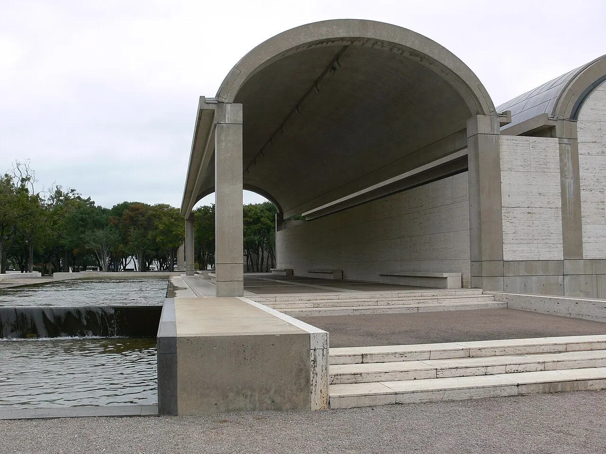
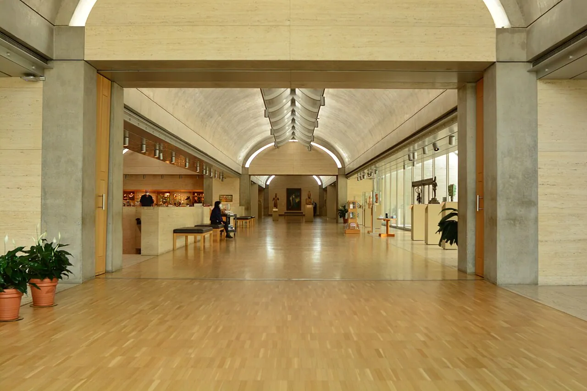
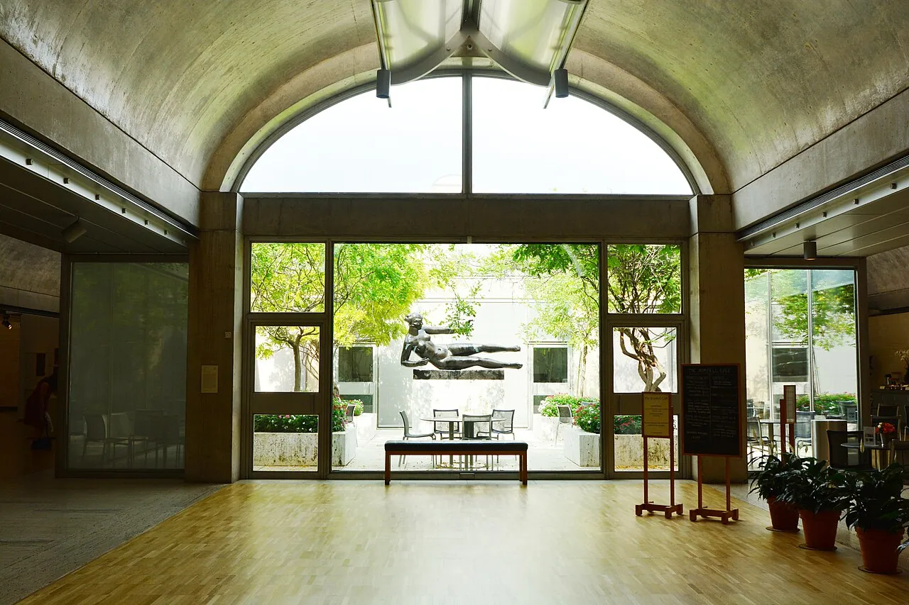
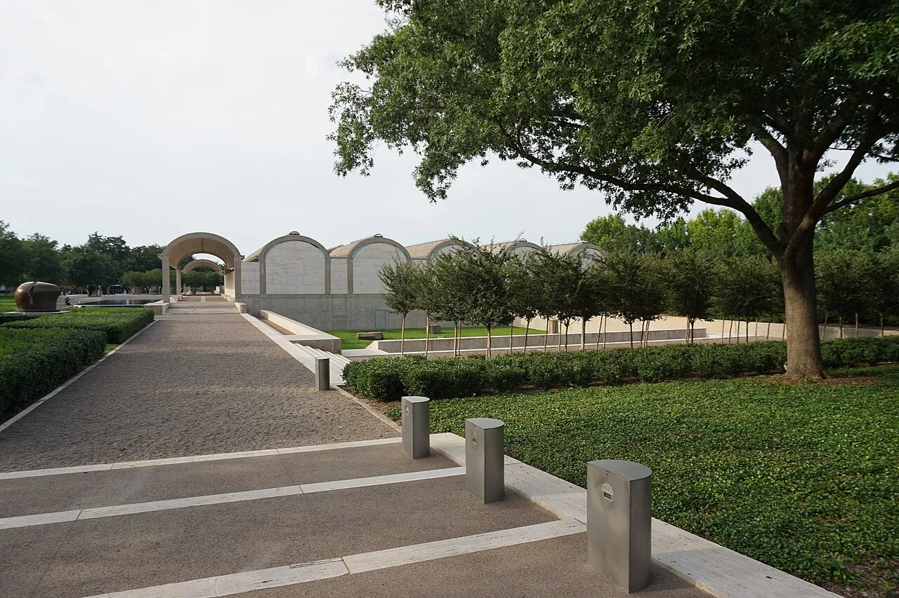

1/8 · Exterior · South wing of the Kimbell Art Museum at dusk, Fort Worth, TexasPhoto: Carol M. Highsmith · Public domain · source2/8 · Exterior · The Kimbell Art Museum in Fort Worth , Texas ( United States )Photo: Michael Barera · CC BY-SA 4.0 · source3/8 · Exterior · South wing of the Kimbell art museum, Fort Worth, TexasPhoto: Carol M. Highsmith · Public domain · source

4/8 · Exterior · Kimbell Art Museum, Fort Worth, TexasPhoto: Photo: Andreas Praefcke · Public domain · source5/8 · Interior · The interior of the Kimbell Art Museum in Fort Worth , Texas ( United States )Photo: Michael Barera · CC BY-SA 4.0 · source

6/8 · Interior · Interior, Kimbell Art Museum, Fort Worth, TexasPhoto: Joe Mabel · CC BY-SA 4.0 · source

7/8 · Interior · Interior, Kimbell Art Museum, Fort Worth, TexasPhoto: Joe Mabel · CC BY-SA 4.0 · source

8/8 · Context · The Kimbell Art Museum in Fort Worth , Texas ( United States )Photo: Michael Barera · CC BY-SA 4.0 · source


.jpg){kind=link}


.jpg){kind=link}